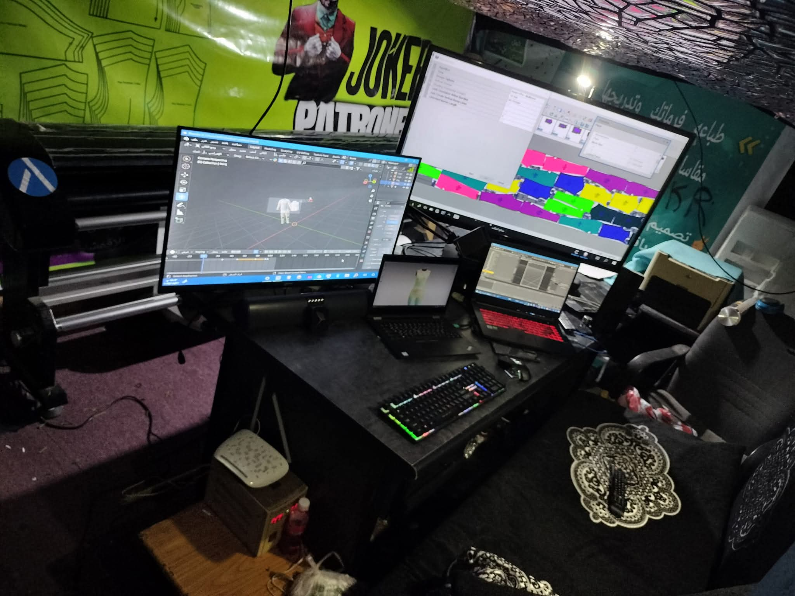

مصمم أزياء ثلاثي الأبعاد بخبرة واسعة في تصميم وتطوير الباترونات والقص بالليزر والكهربائي وتحويل التصاميم إلى نماذج تنفيذية.
ألتزم بتحديث وتطوير تصاميمي ونماذجي باستمرار لمواكبة أحدث الاتجاهات التقنية في عالم الأزياء ثلاثية الأبعاد، لضمان تقديم أفضل جودة وابتكار دائمًا لعملائي في اليمن وخارجها.